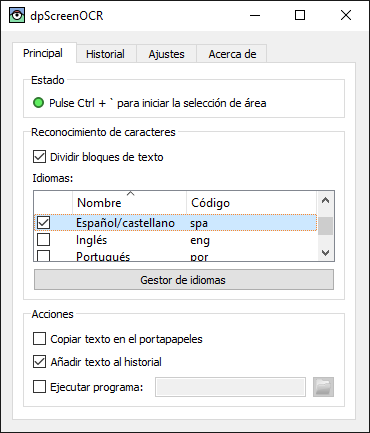

dpScreenOCR
dpScreenOCR es un programa que puede extraer texto desde cualquier parte de la pantalla. Elimina la necesidad de volver a teclear el manual cuando trabaje con documentos escaneados, pantallazos, vídeos, elementos de la interfaz de usuario, y otras situaciones donde es imposible copiar texto de la manera usual.

Características:
Lea el manual para obtener instrucciones de instalación, configuración y uso del programa.
Descárguese la versión 1.5.1 (novedades, licencia):

Contribuya al participar en la traducción o el desarrollo.